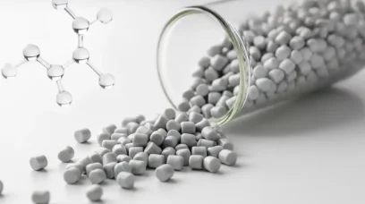

01 / MATERIAL PLATFORMSilver-free polymer technology, built into your materials.
Product overview
Crafted using molecular-level engineering, this product integrates a polymeric organic antibacterial agent to deliver excellent performance against bacteria, viruses, molds, and mites. It contains no silver, eliminating concerns about discoloration or metal corrosion, making it safe to embed into diverse materials. Widely applied across food packaging, textiles, livestock, and water purification, it sustains stable efficacy over extended periods. Customization is available to tailor it to your application needs.